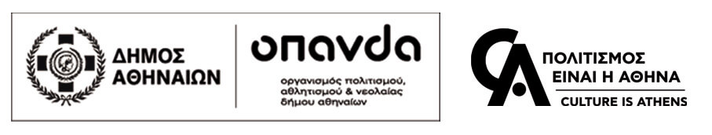

credits
concept | project coordination:
Anna Lascari
text contribution | archiving | social media communication:
Christina Petkopoulou
communication and press office:
Ioannis Asdrachas
translation:
Linda Fitopoulou
web design:
Haris Kotsoglou
web development:
George Stamoulis / Kostas Minaidis
hosting:
ΕΕΛ/ΛΑΚ
fiscal sponsorship:
Creative Diasporas Inc.
with the generous support of:
Dr. Aris N. Economides and Regeneron Pharmaceuticals Inc.
and in collaboration with:
the Organization of Culture, Sports and Youth of the Municipality of Athens in the framework of the Culture is Athens program. 
Very special thanks to all contributors to rattlingframes.net project